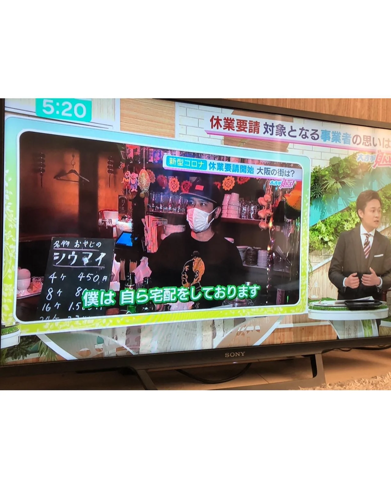
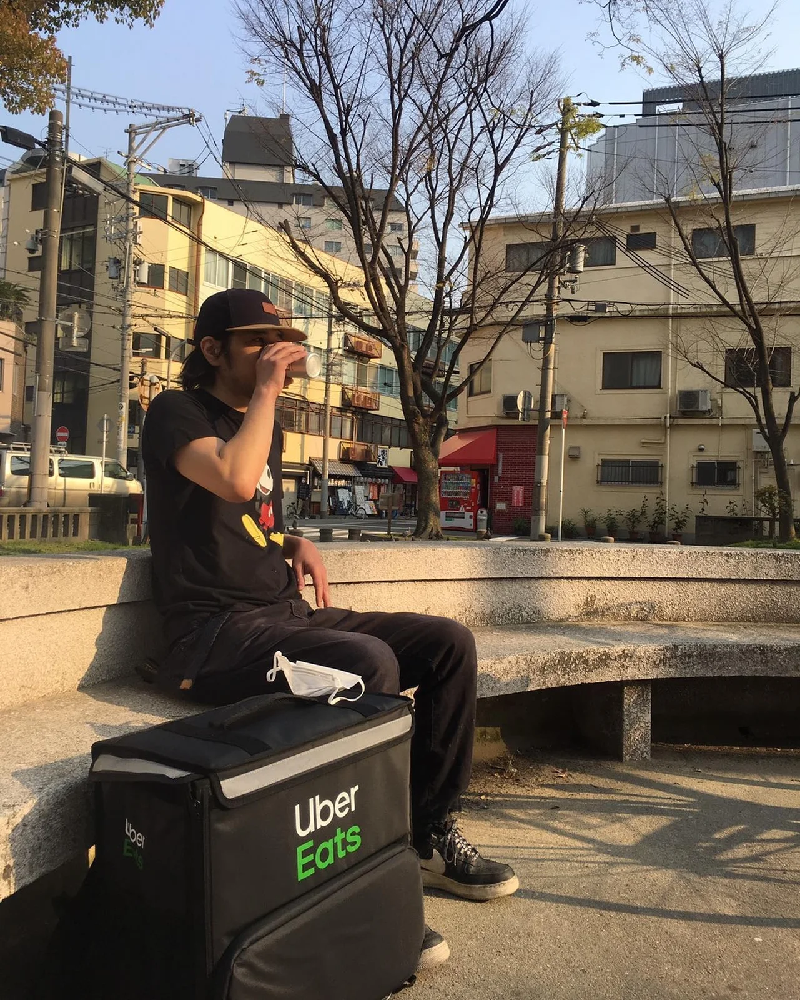

2020年12月31日
今、紅白歌合戦で星野源さんの『うちで踊ろう』を聞いて、ふと今年の4月思い出しての投稿。


今、紅白歌合戦で星野源さんの『うちで踊ろう』を聞いて、ふと今年の4月思い出しての投稿。 デリバリーしてる時によう聴いたなぁ。大変やっなぁ〜。笑 ご来店いただいたお客様には感謝してもしきれません。 デリバリー、テイクアウトをしていただいたお客様もありがとうございました！店を続ける事ができました！ 不幸中の幸いと言って良いのかわかりませんが、商売するにあたって初心を思い出したと思います。 来年は大きく動きたいなと思ってます！ 今年１年ありがとうございました！ 来年もよろしくお願い致します！ #星野源#うちで踊ろう #紅白歌合戦 #中華バル#中華#中華料理#福島区グルメ#路地裏#B級グルメ#中国#チャイニーズ#路地裏チャイニーズ有馬#有馬#シュウマイ#餃子#点心#フォローミー#followme#summer